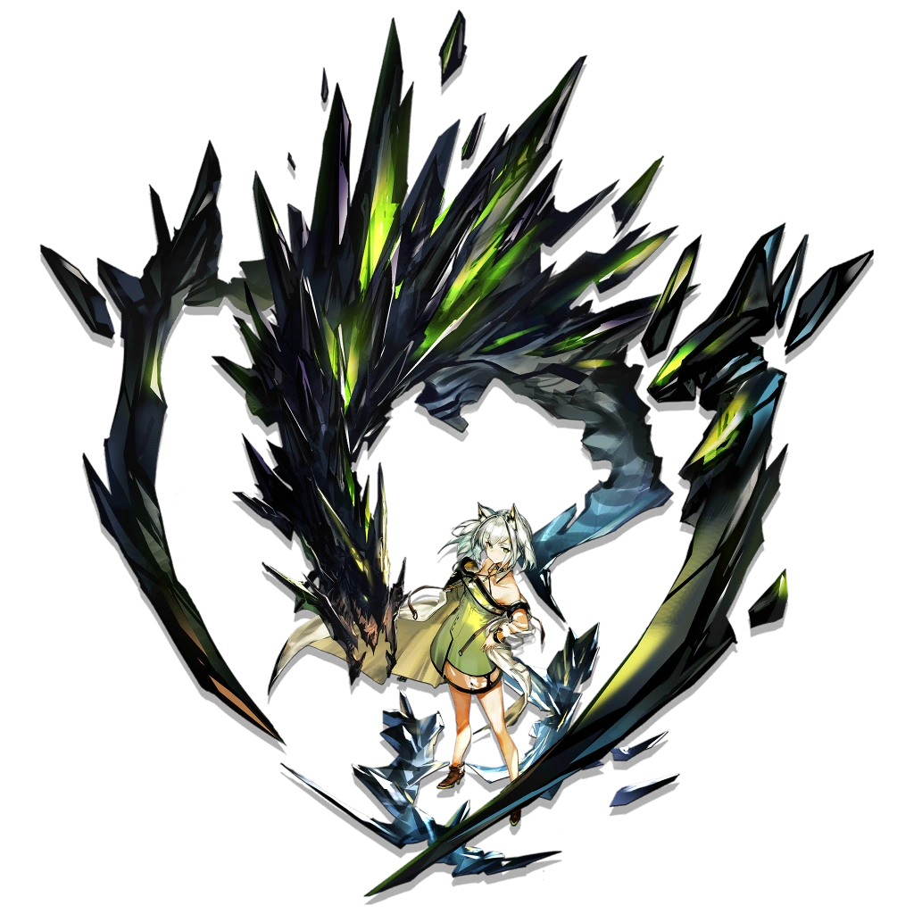

Story

One of the first members of Rhodes Island and one of the few remaining members of its predecessor, Babel, alongside the Doctor, Closure and W, the Feline named Kal'tsit is the head of the Medical Department and R.I.'s unofficial leader/director – despite Amiya being the de jure leader.
Although Kal'tsit seems to be a cold person with a detached and unfriendly attitude, she is an admirable leader with great determination.
She is willing to make great sacrifices to protect those important to her, particularly Amiya and the Doctor because of a promise she had made to protect them, despite currently wanting to kill the Doctor herself.
While Kal'tsit has been on worse terms with the Doctor since Theresa's death, she eventually cast aside her mistrust to work together with them in the face of greater threats.
With the biomechanical creature that accompanies her at all times, Mon3tr, Kal'tsit is willing to provide help to the Doctor in the most dire situations.
Kal'tsit's past is so enigmatic that it is scarcely possible to trace back to it.
Twenty years prior to the start of the Main Theme, in the Terran year 1077, Kal'tsit was a brilliant scientist known for her leadership in the study of the Sarcophagus of Chernobog, Ursus.
For this research, she was bestowed the title of dame. She has worked as a Leithanien scholar, an advisor and Arts trainer for Westin Security of Columbia and even a cleric in Laterano.
She has witnessed countless incidents across Terra such as the Silence of Iberia, the annihilation of Gaul during the Battle of the Four Emperors, and Columbia's independence. She even befriended many long-living mortals like Buldrokkas'tee and the Nachzehrer King.
Overview

Kal'tsit is a 6★ Medical Medic who obviously specializes in Healing and, very unusually for her class, DPS.
As a Medical Medic, Kal'tsit heals one friendly unit at a time, but with a longer range than other Medical Medics; 3×4 tiles with a 1-tile extension up front at Elite 1, or 3×5 tiles at Elite 2.
In exchange, Kal'tsit has a slightly lower ATK than other Medical Medics, but has higher HP and DEF.
Despite being a Medic, Kal'tsit is not meant to support her allies, but rather to take the fight to the enemy by summoning Mon3tr as her first talent.
Stats-wise, Mon3tr can block up to three enemies and has a good overall stats, making it an excellent, versatile frontline combatant.
In the event Mon3tr is knocked out or retreated, it can be redeployed after a period of time that shortens with each promotion so long as Kal'tsit is deployed.
However, Mon3tr cannot be directly healed by friendly units other than Kal'tsit, who will heal it and herself over other friendlies (Mon3tr is still affected by indirect healing effects, such as Angelina's Part-Time Job talent).
In addition, if Mon3tr is not deployed within Kal'tsit's healing range, its DEF will be reduced to 0, so it is ill-advised to deploy Mon3tr outside Kal'tsit reach.
Pros []
- Has a longer healing range than other Medical Medics, especially at Elite 2
- Can summon Mon3tr as a force multiplier, which can be redeployed over and over again when it is KO'd or retreated
- Command: Structural Fortification is a straightforward defensive buff for Kal'tsit and Mon3tr
- Command: Tactical Coordination buffs Kal'tsit's ASPD and Mon3tr's ATK, and makes the latter's attacks hit multiple enemies equal to block count
- Command: Meltdown greatly improves Mon3tr's offensive and defensive capabilities, especially by making its attacks deal Pure damage
- Non-Damaging Restructuring Stuns and deals Pure damage to surrounding enemies when Mon3tr is KO'd (and with PHY-X module, also at the first instance of Mon3tr's HP falling below 50%)
Cons []
- Lower ATK than other Medical Medics (but higher than Multi-target Medics; this can be somewhat improved with her modules, particularly PHY-Y)
- Mon3tr cannot be directly healed by friendly units other than Kal'tsit (but can still be healed with indirect healing, e.g. Angelina's Part-Time Job talent)
- Kal'tsit heals herself and Mon3tr over friendly units, limiting her usefulness as Medic
- Mon3tr's DEF is reduced to 0 if it is deployed outside Kal'tsit's healing range
- Kal'tsit will only generate SP when Mon3tr is deployed and lose all SP when Mon3tr is KO'd or retreated while she uses Command: Tactical Coordination or Command: Meltdown
- The ATK buff from Command: Meltdown gradually decays over its duration, and Mon3tr will lose half of its maximum HP if it does not defeat any enemies while the skill is active, which can KO it
Gallery
Kal'tsit Outfit Preview
Default

An outfit commonly worn by Operators.
While not as practical as a uniform, it's what they find most comfortable.
Elite 2

An outfit that has been improved after the Operator's Promotion.
Custom-made to suit each Operator's experiences and needs, these outfits are designed to provide them maximum flexibility on any battlefield.
Furthermore, this is all done without compromising the comfort that they've come to expect.
Remnant
One of Kal'tsit's outfits for crucial moments.
I am Kal'tsit, doctor from Rhodes Island and companion of Amiya and the Doctor.
You mean nothing to me anymore.
Bloodline of Combat Collection/Remnant.
The Originium has assimilated the earth, and the inner cosmos is manifesting into reality.
She entrusts everything to humanity, leaving only her name, sharpening her purpose into a blade.